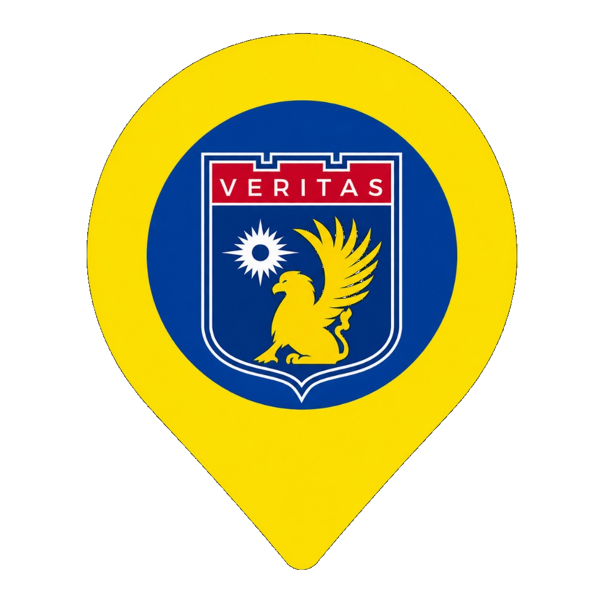
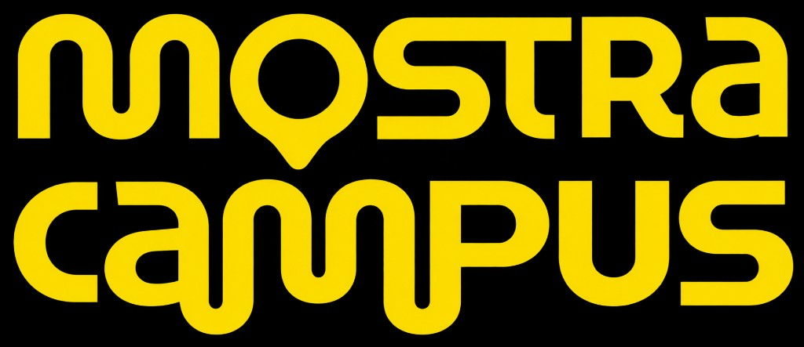

Formação
Tecnólogo


Conhecimento hoje, mais possibilidades amanhã.
O curso de Análise e Desenvolvimento de Sistemas (ADS) da UNINASSAU Caruaru forma profissionais preparados para projetar, desenvolver, testar e manter sistemas e aplicações digitais, unindo teoria e prática para solucionar desafios reais do mercado de tecnologia.
Com uma formação atualizada e voltada para o mercado, você desenvolve habilidades técnicas e comportamentais para atuar em diferentes áreas da tecnologia da informação.
Quero conhecer o campusTecnólogo
2 anos
UNINASSAU
Caruaru – PE
Tecnologia da Informação
Formar profissionais capazes de transformar ideias em soluções tecnológicas, com pensamento analítico, criatividade e foco na inovação.
UNINASSAU CARUARU -
MOSTRA CAMPUS 2026.2
Desenvolvido pelas turmas de ADS
da Uninassau Caruaru